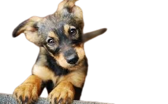
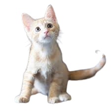
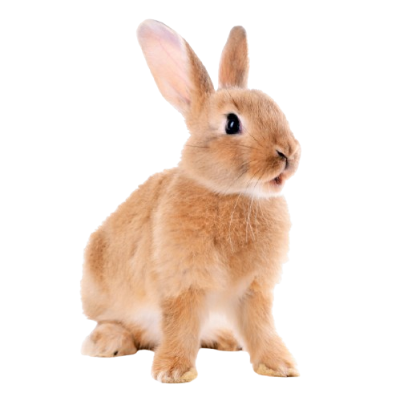
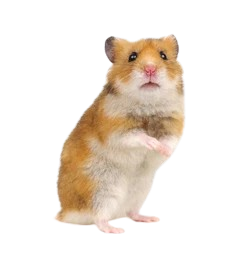

Bem-vindo ao Ponto Pet! üê∂üê±üê∞
Estamos muito felizes por ter você aqui! Este espaço foi criado com carinho para conectar pessoas incríveis como você a animais que estão em busca de um lar cheio de amor.
O Ponto Pet nasceu com a miss√£o de facilitar a ado√ß√£o respons√°vel de animais. Queremos conectar pets que precisam de um lar com pessoas dispostas a oferecer amor e cuidado. Acreditamos que cada animal merece uma nova chance ‚Äî e cada ado√ß√£o √© o come√ßo de uma linda amizade. üêæüíõ



